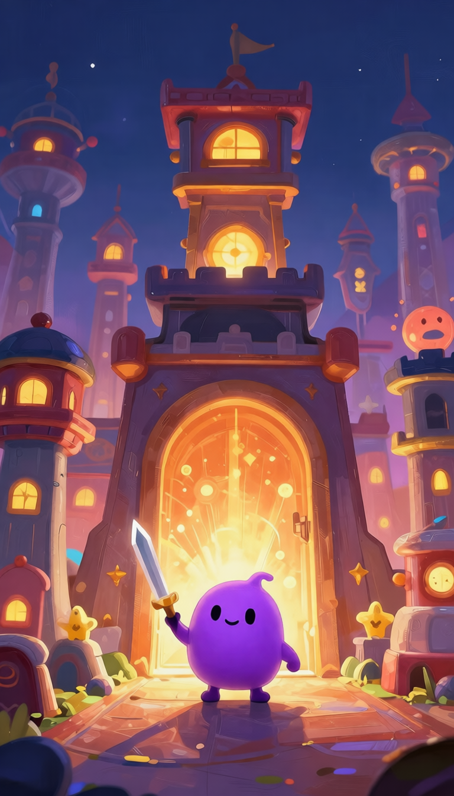
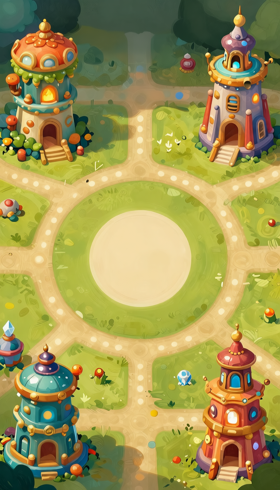

Pip vs 10 Towers · Available on the App Store
Tiny hero. Brave choices.
Pip is small, brave, and definitely not ready for ten magical towers. Good thing every room is only one smart step away.
01
Swipe smart
Read the room, collect hearts and swords, and find the exit.
02
Bosses fight back
Chase moves, clones, jumps, and danger zones change your route.
03
Five towers to start
The first five towers and basic Daily Challenge are free, with no ads.
04
The full adventure
An optional unlock opens towers 6–10, Hard Daily, and Pip’s ending.


Your next game starts here.
About the maker
Made by Pondd. Thanks for spending a little time with Pip vs 10 Towers.
Tap the character or press Enter to change the dance.